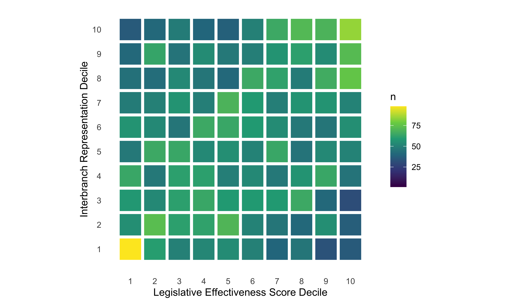
10 Conclusion: Effective Representatives or Styles of Representation?
ABSTRACT: We recap our findings and discuss how they help us understand interbranch representation. We examine the broader picture of how to conceptualize and measure effectiveness in Congress. We conclude with practical policy implications for how interbranch representation can be improved, as well as discussing how interbranch representation seems to be changing during the second Trump administration.
A focus on interbranch representation adds important nuance to modern narratives about a broken Congress. Although Congress may be broken in many ways, one under-appreciated way in which Congress still works is through interbranch representation (at least for some districts). The First Amendment to the U.S. Constitution guarantees the right “to petition the Government for a redress of grievances.” In practice, citizens’ most direct experience with the federal government is with federal agencies. When citizens have grievances or simply need help navigating the federal bureaucracy, they petition their elected representatives for help. Legislators, in turn, petition the government for redress, facilitating responsiveness from agencies.
Perhaps if people better understood what congressional offices did, politicians would be less scared of voting for more staff. This may require a shift in thinking about Congress as a group of politicians to thinking about Congress as an institution that serves a variety of functions, most of which are carried out by staff, not the politicians. Ironically, given how neither “bureaucracy” nor Congress are particularly popular, thinking of Congress more as a bureaucracy might make people like it better.
Our study of interbranch representation reveals many previously unknown dynamics that exist between the legislative and executive branches. By examining a form of congressional activity that was, until recently, largely invisible, our research also raises new questions about what interbranch representation means for the functioning of Congress. After discussing our results in greater depth, we conclude by considering how interbranch representation informs our understandings of Congress’s effectiveness, including how this work can be improved and what the changes in the federal government during the second Trump administration are likely to mean for interbranch representation.
10.1 Understanding Interbranch Representation
We find high levels of inequality in interbranch representation, and support for hypotheses from all three parts of our theoretical framework. However, the strength of the support varies, particularly across types of interbranch representation. Constituent population is a key component of demand that explains unequal amounts of interbranch representation. Capacity, particularly experience, also matters. We find evidence of legislators engaging in interbranch representation strategically—less as a weapon of the opposition than as a resource of the aligned: legislators engage agencies not primarily to oversee or constrain ideological adversaries but to collaborate with ideological and/or partisan friends. Another somewhat surprising strategic finding is that fundraising is positively related to all five types of interbranch representation. Table 10.1 summarizes our findings and the support that we find for our hypotheses.
| Hypothesis | Support | Evidence |
|---|---|---|
| 2.1: More constituents, more work on behalf of individuals. | Mostly, yes | Larger population, more overall interbranch representation. Also for changes in state population for the Senate. |
| 2.2: More demanding constituents, more interbranch representation. | Mostly, yes | More college educated is often associated with more interbranch representation, especially policy work. Government workers, sometimes. |
| 2.4: Lower socio-economic status, less work on behalf of individuals. | No | No evidence |
| 2.3: More constituents with greater needs, more work on behalf of individuals, nonprofits, and local governments. | Mostly, yes | The more constituents receive public assistance, the more legislators work on behalf of nonprofits and local governments, and the more Senators help individuals. |
| 2.5: More experience, more interbranch representation. | Yes | Support for this hypothesis is robust. Experience has a larger impact on volume than on inequality. |
| 2.6: Committee leaders do more interbranch representation | For policy | Driven by policy work, overall interbranch representation increases when legislators become chairs or ranking members of committees. Positive but inconsistent effects for subcommittee chairs. |
| 2.7: More contact with agencies under one’s committee’s jurisdiction | Yes | Legislators make more requests to an agency when they join a committee to which that agency reports. |
| 2.8: More staff/staff experience, more interbranch representation. | Little evidence, but limited tests | Increasing spending is only significantly associated with increasing corporate service and policy work, but we only have data for the House where allocations are the same and there is little variation to leverage. |
| 2.9: Electorally vulnerable, more interbranch representation. | Possibly for general elections, very unclear for primaries | Interbranch representation is sometimes positively correlated with competitive general elections. Mixed, inconclusive evidence for competitive primaries. |
| 2.10: Minority party, more interbranch representation. | Inconsistent results | Some specifications show a large significant positive relationship, others show a large significant negative relationship, and others show no relationship. |
| 2.11: Legislators in the President’s party do more interbranch representation. | Only on behalf of businesses, nonprofits, and local governments | The results support this theory for the types of interbranch representation where the logic most clearly applies. |
| 2.12: Legislators not in the President’s party do more interbranch representation. | No | No evidence, often the opposite |
| 2.15: More corporate PAC contributions, more interbranch corporate advocacy. | Yes* | *While consistent with the theory, correlations with other types of interbranch representation suggest something else may be going on. |
| 2.17: Republicans advocate more for business interests. | Yes | Results support the theory. |
| 2.13: More attention to ideologically proximate agencies. | For everything except for work on behalf of businesses, which are the opposite | Results align with the theory focusing on coalitional politics among agencies and congressional offices |
| 2.14: More attention to ideologically distant agencies. | For work on behalf of businesses, everything else is the opposite | Results do not support the theoretical motivation for this hypothesis, rooted in oversight, not service. |
| 2.18: More staff of a given type, the more work of that type. | Sometimes (limited data) | Offices with more constituency service staff do more on behalf of nonprofits and local governments. Both legislative and constituency service staff are associated with policy work. Offices with more communications staff do less interbranch representation. |
We find consistent support for our expectations about the role that demand would play in interbranch representation. Constituent population, constituent demand (as measured by education and government employment), and constituent need (as measured by the use of government assistance) all matter for the amount of interbranch representation that legislators do. Constituent need plays a role primarily in the provision of constituency service to nonprofits and local governments, reflecting the fact that legislators often support these organizations’ applications for grants. Surprisingly, constituent population matters for interbranch representation even in the House, where differences in population across districts are much smaller than in the Senate.
Demand, however, does not tell the entire story of inequality in interbranch representation. We also find extremely consistent (and often large) effects for components of capacity. Legislator experience matters across nearly every model specification and type of interbranch representation, with more experienced legislators doing more of this activity. Interestingly, institutional position matters only for policy work. It seems that legislators who hold positions like committee chairs have no advantage in the constituency service types of interbranch representation, despite the additional capacity that those positions provide. Legislators who sit on the reporting committee for an agency, however, do more interbranch representation with that agency, which could reflect an underlying interest in that policy area, closer relationships with that agency, or even perceived expertise among constituents.
Although we do find that strategy matters in some circumstances for interbranch representation, the ways in which it works are complicated. In some cases, for instance, interbranch representation is positively correlated with electoral competitiveness–that is, legislators facing more competitive general elections do more interbranch representation. For competitive primary elections, the results are mixed and inconclusive: positive and statistically significant results do not appear in enough of our model specifications to draw clear conclusions. We find similarly tepid results for majority/minority status, as only non-chairs in the minority party sometimes do more interbranch representation.
Other components of strategy matter differently across types of interbranch representation. As hypothesized, we do find evidence that Republican legislators do more advocacy on behalf of businesses. We also find that legislators who allocate more staff to a particular function in their office do more of that activity, particularly with constituency service staff and service on behalf of nonprofits and local governments. Legislators’ partisan and ideological strategies, however, appear even more nuanced. Legislators do seem to take advantage of a cooperative executive by writing more letters on behalf of businesses and nonprofits/local governments when a co-partisan president is in the White House. But we find no evidence that legislators who do not share the president’s party do more interbranch representation as a means of checking the executive or opposing the administration’s work in federal agencies. Ideological distance between a legislator and an agency works in similar ways. Legislators appear to be broadly motivated not by oversight objectives, as legislators’ doing more interbranch representation with ideologically distant agencies would suggest. Only for work on behalf of businesses does ideological distance have this effect. Instead, for all other types of interbranch representation, legislators do more work with ideologically proximate agencies that presumably share their goals.
One of our most striking findings is the relationship between fundraising and interbranch representation. We had hypothesized that legislators who received more corporate PAC donations would do more interbranch representation on behalf of corporations (in the form of both service and policy). While we do find evidence to support this hypothesis, we also find relationships between corporate PAC donations and all other types of interbranch representation. Legislators who engage in more fundraising also engage in more constituency service on behalf of individuals and nonprofits/local governments, as well as more general policy work. Rather than suggesting the occurrence of any kind of corporate favoritism or the pursuit of an electoral strategy involving fundraising, this broader pattern suggests that something else is driving high levels of performance across these two different indicators. We explore this connection in the next section by discussing how interbranch representation informs our understanding of effectiveness in Congress.
10.2 Conceptualizing and Measuring Effectiveness in Congress
A major argument of this book is that despite significant levels of inequality in interbranch representation across members of Congress, the regular provision of interbranch representation is one way in which Congress, as an institution, is relatively functional. As discussed in chapter 1, Congress appears less functional by a number of other (primarily legislative) metrics. However, this discourse about the broken nature of Congress comes with a caveat, noted by David Mayhew: the oft-used metric of “bills passed” is incomplete. More legislation, Mayhew argues, is not the same as landmark legislation. And legislating, though an important function of Congress, is only one of its tasks.
Separate from the question of what makes the institution of Congress effective is what makes an individual member of Congress effective. Scholars have done extensive work to answer this question by measuring the legislative effectiveness of individual legislators (Volden and Wiseman 2014). Since the introduction of Volden and Wiseman’s Legislative Effectiveness Scores, many other scholars have sought to understand how and why this legislative effectiveness matters, including for representation (Hunt and Miler 2025) and elections (Treul et al. 2022).
What, then, would we consider a truly “effective” Congress to be? Adding interbranch representation to our picture of what Congress does makes it clear that a more holistic understanding of Congress’s activities is necessary to answer this question. Studying interbranch representation also raises the question of how this work compares with other work that individual legislators do, particularly legislating and fundraising. To explore this relationship, we present correlations between interbranch representation and two measures of individual legislators’ productivity on other matters: Legislative Effectiveness Scores (Volden and Wiseman 2014) and corporate PAC fundraising.
Legislative Effectiveness Scores
The Pearson’s product-moment correlation between annual Legislative Effectiveness Scores and total annual requests to federal agencies is 0.024 (p < .01). While we cannot necessarily infer from this correlation that more effective legislators are also consistently more effective at interbranch representation, Figure 10.1 does show that legislators with the lowest Legislative Effectiveness Scores also do the least interbranch representation. Some of this relationship, however, may be driven by congressional leaders, particularly the Speaker, exercising power and effectiveness through other channels that are not captured in these measures.
The correlation between Legislative Effectiveness Scores and interbranch representation is, unsurprisingly, strongest for policy work. It is driven by the top and, especially, bottom deciles of both distributions.
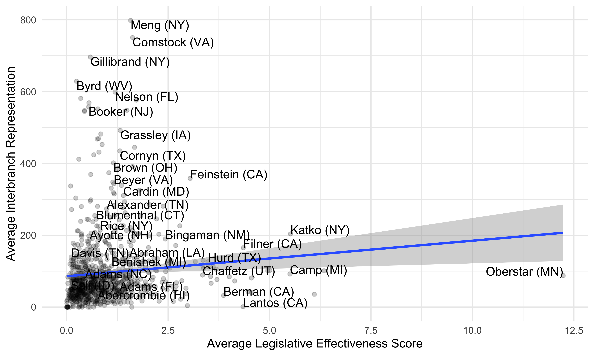
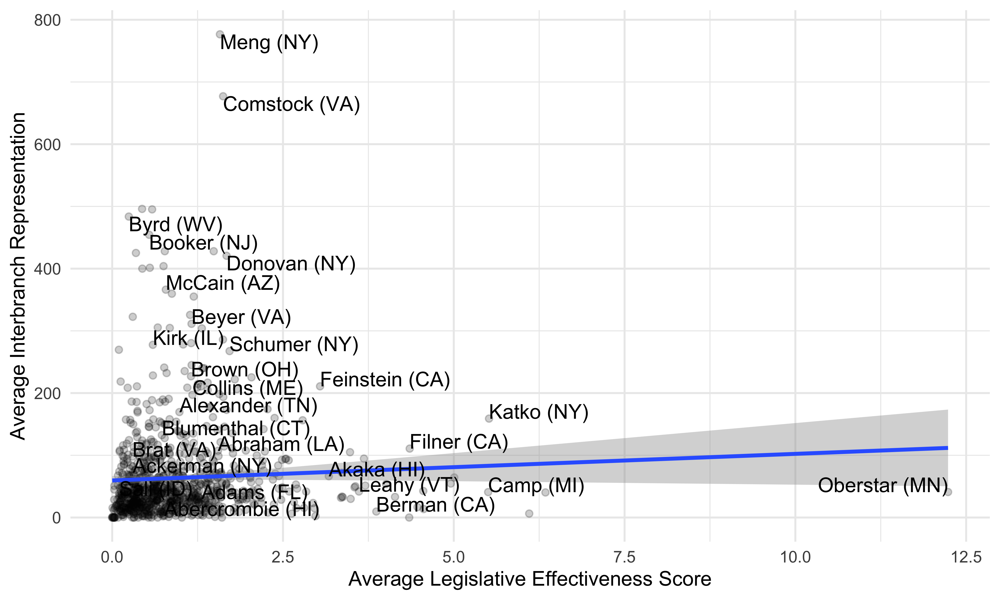
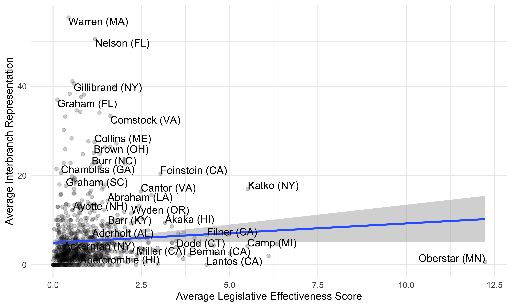
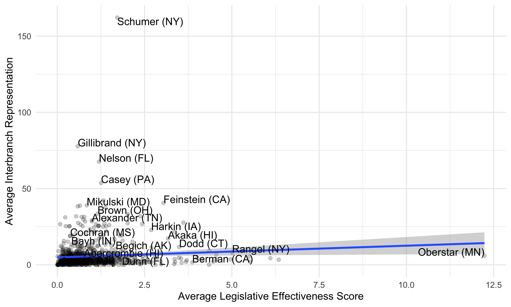
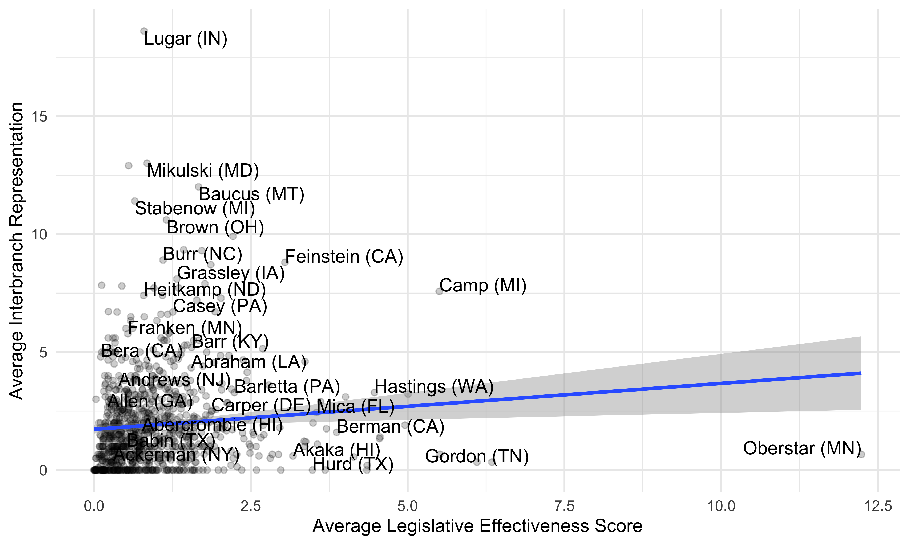
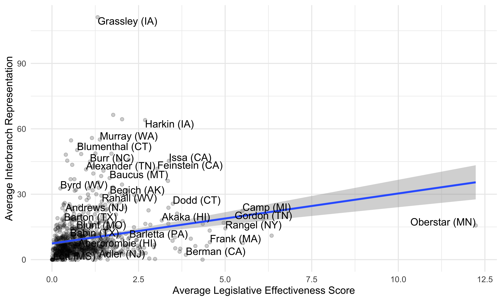
Fundraising
As shown in Figure 10.3, the correlation between corporate PAC fundraising and interbranch representation is driven even more by the top and, especially, bottom deciles of both.
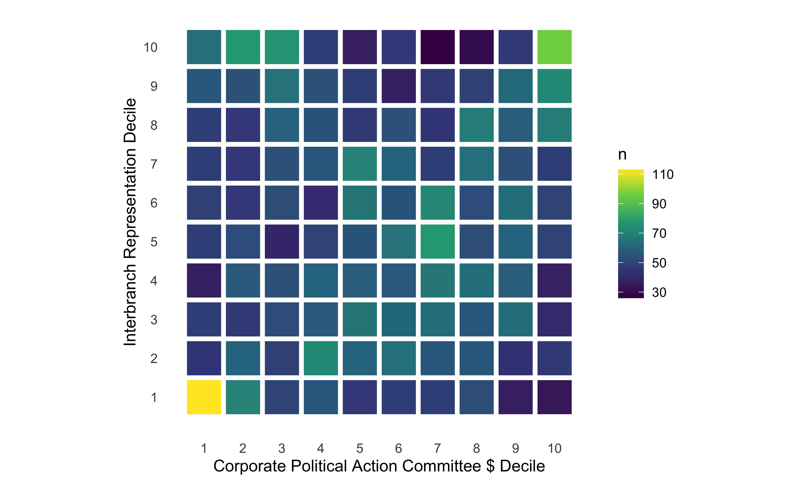
The correlation between annual corporate PAC contributions and total annual requests to federal agencies is 0.08 (p< .001), a slightly stronger correlation than that between LES and requests to federal agencies. The fact that some legislators do both more fundraising and more interbranch representation, also supported by our other findings throughout this book, presents a significant challenge to our understanding of how fundraising work fits in with legislators’ other activities. Critics of Congress – sometimes including members of Congress themselves – decry fundraising as, at best, a vacuous distraction from Congress’s real work. It is assumed that, by engaging in more fundraising activities, members of Congress are sacrificing legislative and representational work. From our analysis, however, that appears not necessarily to be the case.
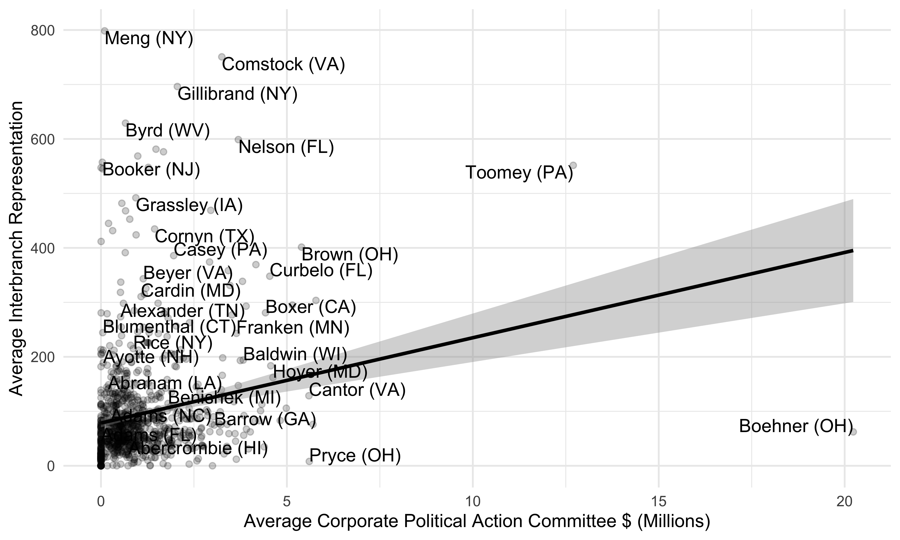
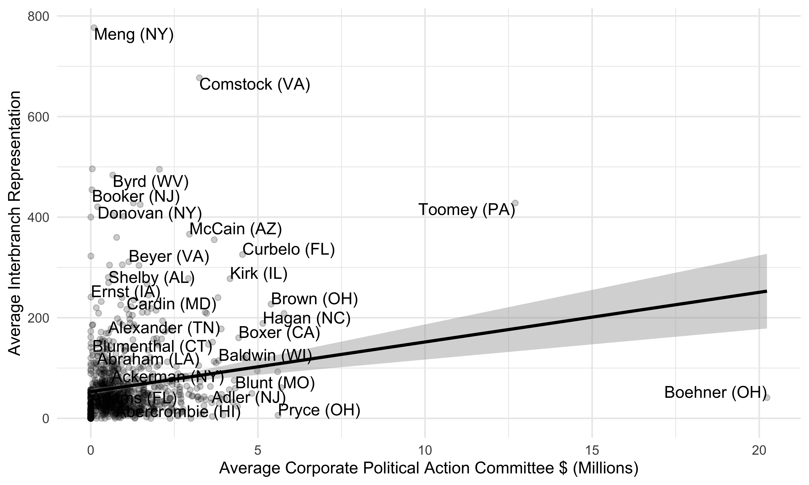
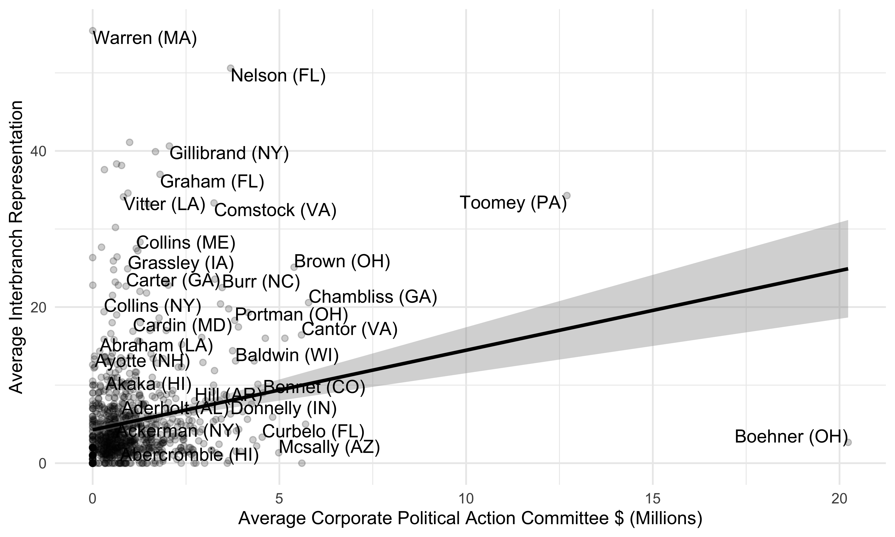
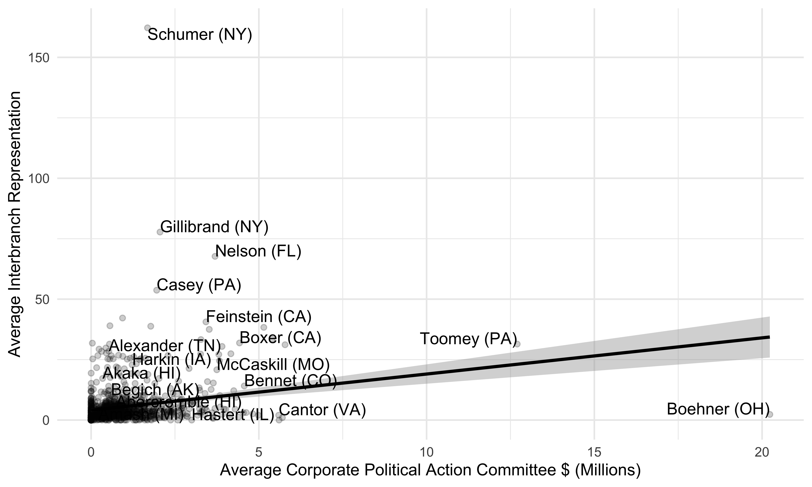
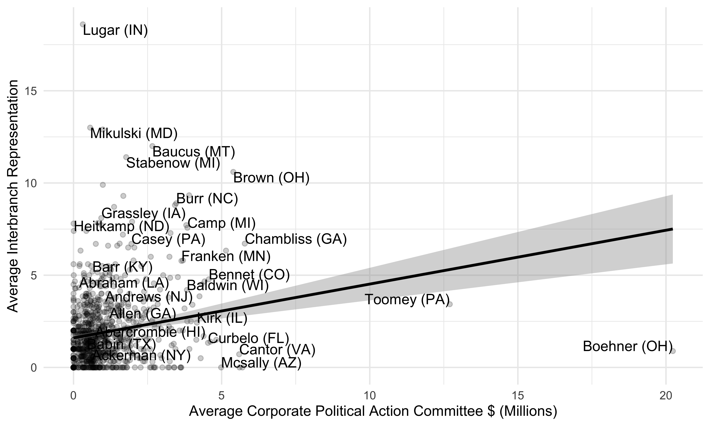
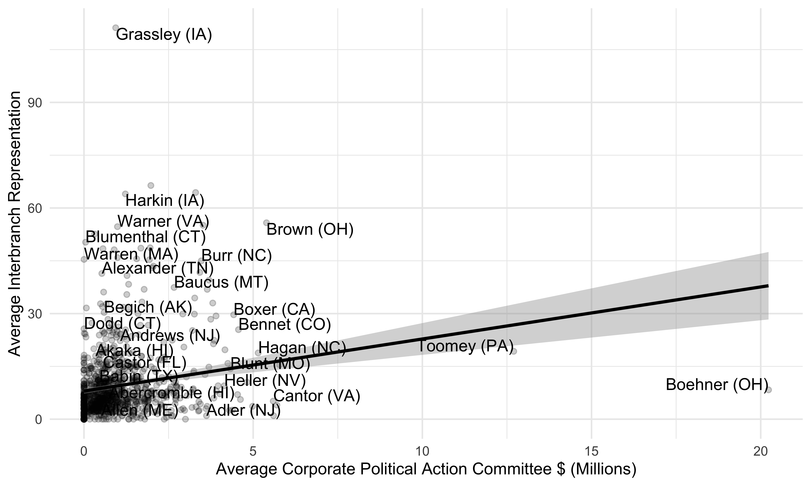
While more research is needed to understand the precise nature of the relationship between interbranch representation and these other measures of what legislators do, the correlations presented here suggest that at least some legislators, rather than choosing to concentrate their efforts only on one type of activity, simply excel at everything.
10.3 Legislative Styles and Interbranch Representation
A separate body of scholarship has classified representation into “types” based on relative attention to various legislative, constituency, partisan, and communications activities (e.g. Fenno 1978; Payne 1980; Bernhard and Sulkin 2018; Grimmer 2013; Crosson and Kaslovsky 2024). From Home Style to “work horses and show horses”, many political scientists present variation in representation not in an overall measure of more or less representation but by characterizing different ways of representing (or at least, different ways of practicing politics).
Conceptually, the legislative styles developed by Bernhard and Sulkin (2018) seem to map well onto the types of interbranch representation. We might expect “district advocates” to be associated with more constituency services and less policy work, and “policy specialists” to be the reverse. However, Table 10.2 shows no such relationship. While the relationships between policy specialists and corporate constituent service (model 2) and policy work on behalf of industry (model 5) are in the expected directions, relative to the reference style of “Ambitious Entrepreneur,” this is true for all of the other styles as well.
| (1) | (2) | (3) | (4) | (5) | (Total) | |
|---|---|---|---|---|---|---|
| † p < 0.1, * p < 0.05, ** p < 0.01 | ||||||
| This model predicts different types of interbranch representation using Bernhard and Sulkin's legislative styles. | ||||||
| Dependent variable | Const. | Corp | NGO/Govt | Policy | Corp Pol | Total |
| District advocate | 0.011 | -0.384† | -0.150 | -0.027 | 0.337* | 0.052 |
| (0.203) | (0.220) | (0.143) | (0.312) | (0.167) | (0.145) | |
| Party builder | -0.026 | -0.465* | -0.216 | 0.183 | 0.789** | 0.215 |
| (0.201) | (0.214) | (0.162) | (0.326) | (0.217) | (0.144) | |
| Party soldier | 0.083 | -0.411† | -0.106 | 0.026 | 0.516** | 0.107 |
| (0.192) | (0.210) | (0.150) | (0.327) | (0.180) | (0.138) | |
| Policy specialist | -0.122 | -0.464* | -0.227 | -0.125 | 0.527** | 0.002 |
| (0.179) | (0.205) | (0.144) | (0.323) | (0.182) | (0.135) | |
| Observations | 36,500 | 28,949 | 25,606 | 12,156 | 33,567 | 43,623 |
| Year x agency fixed effects | X | X | X | X | X | X |
For interbranch representation, trade-offs between serving the district and focusing on policy are not the main story. The invisible nature of interbranch representation likely plays a role in these patterns. For instance, Grimmer’s types of “appropriators” and “position-takers” capture senators’ orientations toward communication and how these tendencies vary depending on their “marginal” or “aligned” electoral relationship with their state. Legislators of either style could realistically perform high levels of interbranch representation.
If we want to characterize styles of interbranch representation, it is an overarching style. Workhorses and show horses is a better fit for the empirical patterns we observe. Some offices are doing much more work than others. Despite a great deal of evidence that members invest in advertising their services to drum up demand, we find a fairly consistent negative relationship with spending on communications staff. Generally speaking, the same factors drive all of the different forms of interbranch representation we study.
10.4 Practical Implications of Interbranch Representation
“The demands on Congress are accelerating. Its capacity to legislate, oversee, learn, and adapt is not.” - https://congressh3.io/
The inequality in interbranch representation that we have documented and explained in this book raises questions about how effectively congressional offices are handling this workload and what, if anything, can be done to improve how interbranch representation works.
As constituency service has begun to gain more attention as an essential function of congressional offices, other groups more closely connected to the institution have made efforts to study and improve both casework and congressional communication with the bureaucracy. Organizations like Civic, which has proposed a consistent tagging system for casework to identify common problems that constituents experience during policy implementation, and PopVox, which provides resources for caseworkers and opportunities for congressional office staff to learn from one another, are doing vital work to improve congressional offices’ capacity for constituency service. Equally important are efforts to ensure that constituents are aware that they can contact their member of Congress for help. While some recent research has thankfully picked up this thread (e.g. Blackwood 2026), more can also be done to understand legislators’ solicitation of casework and how (if at all) it affects interbranch representation.
Interbranch representation depends on the skill and initiative of congressional staffers. Rather than mechanically responding to bureaucratic failures, members of Congress and their staff are contacting agencies in the bureaucracy with a wide range of concerns involving constituency service and policy. As part of effectively serving constituents and pursuing the legislator’s policy goals, congressional staff must possess knowledge about the workings of the bureaucracy and how it connects to constituency service and policy.
The consistent and positive relationship between legislators’ experience and providing more interbranch representation is further evidence that term limits would undermine Congress as an institution. Legislators–or, at minimum, their staff–need to spend time in the institution in order to develop useful expertise. This fact has long been known and accepted by political scientists (e.g. Carey et al. 2000), and this evidence that interbranch representation also benefits from institutional memory adds to this body of evidence.
10.5 Changes Under the Trump Administration
Changes in the second Trump Administration simultaneously increase demand and opportunities for interbranch work to fill new gaps in the functioning of government while also likely making that work less effective, especially for legislators on the administration’s list of enemies. In short opportunities to represent constituents are increasing, but ability to do so successfully may be decreasing. The dismantling of certain agencies and offices and the dramatic shift from a merit-based civil service to more centralized control of agencies by White House under the Trump administration and Roberts Court may drive increased interbranch representation in some cases and inhibit it in other contexts. Decreasing capacity, a shift to relying on contractors, and increased paperwork at many agencies, along with a general shift from standard procedures to ad hoc negotiations, potentially increase the value of the ombudsmen role that congressional offices play. On the other hand, decreasing capacity also makes agencies less able to respond to legislator requests, correct administrative errors, reform in response to oversight investigations, or adapt to changing circumstances in response to legislator pressure. Increasingly centralized, partisan, and ad hoc decision-making may also foreclose some types of interbranch representation or some legislators from doing so (e.g., those not perceived as loyal to the president or with nothing to offer in exchange for help for their constituents).
Changes under the Trump administration could also affect the study of interbranch representation. First, as nearly all agencies lost experienced staff to firings and encouraged resignations, we may expect additional delays in responses to FOIA requests beyond what we have experienced, thus limiting our ability to obtain useful data in a timely manner. Second, agencies operating with fewer employees may simplify, alter, or even eliminate their regular record-keeping practices if they have fewer people available to keep and maintain records of congressional correspondence. As a way of explaining gaps in the records we received, FOIA officers told us that record-keeping was de-prioritized in the first Trump administration. The second Trump administration may be similar in this respect. Indeed, the administration claimed that DOGE was not subject to FOIA and the Roberts Court stayed a lower court ruling that it was, saying “separation of powers concerns counsel judicial deference and restraint in the context of discovery regarding internal Executive Branch communications.” (U.S. Doge Service, et al. v. Citizens for Responsibility and Ethics in Washington 2025)
Why interbranch representation may increase: Decreasing agency capacity and procedures, increasing paperwork and contractors
Congressional offices fill gaps created by mass firings, office closures, and structural reforms that reduced internal oversight. The most obvious gap is in the ability of agencies to deliver benefits and correct errors when they lose staff capacity and offices in a district. For example, with historic cuts of 8,000 Social Security Administration (SSA) employees and the closing of offices in many districts, SSA’s backlog of cases has increased to record levels, and employees report that efforts to reduce call wait times have led to more errors (Rein et al. 2025; Romig 2026), increasing the number of people who could use help from a congressional office. Firings and office closures themselves create opportunities for interbranch representation. In the first months of the second Trump administration saw daily reports of members of Congress engaging in interbranch representation to reverse proposed cuts. As Politico put it, “GOP lawmakers unleashed a frantic flurry of calls and texts after federal agencies undertook the latest firings” (Hill 2025). Axios reported that “GOP lawmakers privately back-channeling with the Trump administration to try to shield their constituents from the fallout (Doherty and Solender 2025). For example, upon learning that offices for the Social Security Administration (SSA), the National Weather Service (NWS), and Indian Health Service (IHS) in his district, Chair of the House Appropriations Committee, Representative Tom Cole and his staff started contacting their contacts at the White House and SSA, NWS, and IHS. The White House reversed course and removed the three offices from the lease cancellation list. Mr. Cole then claimed credit on social media (Figure 10.5) for the success of his office in representing his constituents and by protecting facilities that provide them with vital and valuable services (Miller 2025).
Similarly, after reporting that the Trump Administration planned to fire thousands of employees at the National Oceanic and Atmospheric Administration, Senator Lisa Murkowski texted Commerce Secretary Howard Lutnick, concerned about the agency’s ability to conduct annual trawling surveys used to allocate fishing rights to Alaska’s fishermen. “I’m letting them know what the problem is and giving them the opportunity to solve it,” Murkowski told the New York Times (Miller 2025). When the Department of Defense planned to fire 1,600 workers at the Tinker Air Force Base and McAlester Army Ammunition Plant, Senator James Lankford, Republican of Oklahoma, called Defense Secretary Pete Hegseth. The day after Senator Susan Collins met one-on-one with Secretary Hegseth, he issued a carveout exempting Maine’s naval shipyard workers from the Defense Department’s layoffs and hiring freeze. Rep. Mike Simpson said his staff were working to mitigate cuts to National Park Service sites in his district. Senator Jerry Moran contacted the State Department and the White House about how the dismantling of USAID was affecting his constituents who sell crops to a government program that fights hunger abroad (Leonard and Fuchs 2025). Shortly after, the State Department approved the shipping of $560 million of food aid sitting in ports. The Bonneville Power Administration hired back 30 fired workers after Rep. Cliff Bentz contacted the White House on their behalf. Rep. Zach Nunn contacted the USDA about firings in his district, telling Axios he “talked to the administration on it, they recognized it, they heard it, and we got those positions reinstated” (Doherty and Solender 2025).
The major casework-driving events of the second Trump administration Table 10.3 identified by Meeker (2026) highlight agency disruption and restructuring as major drivers of congressional office work casework. Additionally, any administration that engages in wars, fails to prevent public health crises or natural disasters, or increases the number of people dealing with immigration, unemployment, or public benefit paperwork will increase the demand for assistance from congressional offices.
| Year(s) | Event | Casework Impact |
|---|---|---|
| 2025 | Government shutdown | Agency-disruption casework; exacerbated by many legislative offices placing staff on furlough |
| 2025 | DOGE restructuring and program changes | Sustained federal-employee and program-disruption casework |
| 2026 | Iran war | Repatriation casework on top of ongoing immigration casework |
| Recurring | Western drought and wildfire cycles | Seasonal and recurring disaster casework |
| Recurring | Local disasters: tornadoes, flooding, plant closures, industry collapses | Varied and complex local casework, often including disaster programs as well as wayfinding and connections to local relief, liaising with state counterparts on unemployment and emergency SNAP/WIC benefits, replacing destroyed or damaged documents, etc. |
Structural reforms may also increase the demand for oversight. For example, as many inspectors general are fired and their offices are addled or dismantled, agencies may investigate and correct fewer of their own mistakes, creating more opportunities for congressional offices to attempt to fill the gap. Similarly, the Trump administration’s dismantling of appeals processes for public benefits and civil servants, as well as offices that help people navigate the degraded federal bureaucracy, may create demands for an ombudsman.
After the Roberts Court ruled that Congress acted unconstitutionally in requiring for-cause removal of agency heads (and generally erasing most forms of agency independence as unconstitutional), the Merit Systems Protection Board began several initiatives to dramatically limit the scope of its work on behalf of civil servants. It removed the word “independent” from its website and issued joint rules with the Office of Personnel Management removing procedures and factors that agencies previously had to consider when firing workers, making the process more ad hoc. Similarly, the removal of civil service protections from many federal employees (Hsu 2026) create many opportunities for case-by-case work around federal worker firing. As discussed in Chapter 8, members of Congress intervene and inquire about civil service and political appointee hiring and firing decisions. With fewer processes and protections, congressional offices may be making more inquiries.
Like cuts to the federal workforce, impounding or changing disbursement criteria for federal grants may provide opportunities for interbranch representation. For example, Senator Katie Britt of Alabama lobbied the Trump Administration not to cut National Institutes of Health medical research grants to the University of Alabama (Miller and Edmondson 2025; Turner 2025) and Lisa Murkowski of Alaska asked NIH not to target Alaska Natives in cuts to programs linked to racial minorities.
Increasing and increasingly unclear paperwork and legal processes also create opportunities for interbranch representation. For example, the SSA now requires people to appear in person at a field office for some changes that were once able to be made over the phone, while at the same time closing many field offices (Rein et al. 2025). For example, the AP reported that Rep. Carlos Gimenez was helping his constituents and their families in Miami after the Trump Administration removed Temporary Protected Status from Venezuelans, suddenly making their immigration status unclear, making them unable to work, and putting them at risk of deportation if they were not able to navigate the increasingly overwhelmed immigration system. Asked if he felt he had the power to make a difference, he replied: “I’m not powerless. I’m a member of Congress.” (Mascaro and Freking 2025).
Why interbranch representation may decrease: Decreasing agency responsiveness, increasing partisanship
Our findings have also made clear the importance of employees in the federal bureaucracy for legislators providing effective representation. Although we did not examine agencies’ responses to legislators’ queries, legislators would undoubtedly be most effective at interbranch representation when bureaucrats are responsive to them. The Trump administration’s cuts to the federal workforce may lead agencies to be less responsive to requests from members of Congress, thus impeding the overall functioning of interbranch representation, particularly its ability to “close the loop” in bureaucratic processes. Beyond the raw capacity to respond to legislator requests, dismantling internal checks and transparency mechanisms like performance evaluations (Friedman 2026), whistleblower protections (Doubleday 2025), inspectors general, and FOIA also gives members of Congress much less information to use in conducting oversight.
The centralizing of control over federal agencies, including in their communications with members of Congress, may inhibit the flow of information and responsiveness to perceived enemies. As we noted in Section 3.1.1, Legislative Affairs offices are the official point of contact for members of Congress, but we found a large volume of interbranch representation directly targets sub-agencies, not going through legislative affairs or the Secretary’s office. If the Trump administration’s controversial efforts to centralize correspondence with members of Congress in legislative affairs offices are successful, many legislators worry that their correspondence with agencies will be inhibited (Timotija 2025). As Politico reported,
“Republicans consider federal agency officials powerless to [stop personnel and program cuts]. They’re instead focusing their efforts on the White House as their offices are inundated with calls from frantic constituents” (Hill 2025).
Likewise, if efforts to centralize contracting and procurement (Alms 2025) are successful, the ability for members of Congress to intervene may be limited. We found strong relationships between agencies and legislators who sit on their reporting committees. To the extent that procurement is centralized in one of the few agencies that does not report to any congressional committee (the General Services Administration), legislators will no longer have that relationship with the decision-makers on government contracts.
Importantly, centralizing decision-making and correspondence with members of Congress in the offices of political appointees and the White House makes the potential for interbranch representation to be effective more contingent on a member’s relationship with the president. This makes contacts with the White House and political appointees more valuable and relationships with career civil servants less valuable to interbranch representation. It also opens the door to partisan loyalty tests, potentially leading to larger presidential pork (Berry et al. 2010) effects than we find here. For example, it was widely reported that the exemptions to cuts, like those granted to Representative Cole’s district, were only available to republicans in good standing with the president. The New York Times reported that some Republicans were invited to meet privately with those in charge of the cuts and given a cell phone number they could call to make requests, while letters from democrats when unanswered (Miller 2025). Like Republicans Mirkouski and Cole, Democratic Senator Chris Van Hollen contacted the office of Commerce Secretary Lutnick about staffing cuts and office closures, including several National Weather Service prediction and modeling centers in his district. Unlike Mirkouski and Cole, weeks passed with no word from the agency. “These guys have been AWOL when it comes to responding,” Van Hollen told the New York Times (Miller 2025). The Times also interviewed Senator Ron Wyden of Oregon, the top Democrat on the Finance Committee, who said the administration was on “a stonewalling spree” — “I’m used to having challenges, but here, they don’t even pretend to be sincere about it” (Miller 2025).
“Asked about the partisan disconnect, a White House spokesman did not deny that the administration was largely ignoring Democrats’ appeals while catering to those of Republicans” - The New York Times (Miller 2025)
In the first Trump administration, the White House broke with post-Watergate norms about responding to congressional requests, but the agencies were generally still responsive (Kumar 2019).
Finally, the Trump Administration’s general reduction of reporting and transparency may limit the ability of congressional offices to know what is going on. For example, SSA stopped publicly releasing regular monthly updates of many customer-focused service metrics (Rein et al. 2025). We found that the most common way that members of Congress engage agencies on policy issues was by commenting on proposed agency rules. To the extent that the Trump Administration is successful in curtailing administrative processes like public comment periods and environmental impact reviews, opportunities for interbranch representation will be curtailed, especially for members without direct lines of communication with the president’s inner circle. Such structural reforms that limit opportunities for oversight can be thought of as limiting the capacity of Congress, even if congressional staffing remains the same (Bolton and Thrower 2016).
Given that this book has examined congressional behavior, it is worth considering at greater length how members of Congress may respond to this new environment. Our findings on the role that presidential partisanship plays in interbranch representation are instructive here. Empirically, in our data we find that legislators have used interbranch representation less as a weapon of the opposition than as a resource of the aligned: legislators engage agencies not primarily to constrain ideological or partisan adversaries but to extract responsiveness from legislators who show loyalty to the president.
10.6 Future Research
Future research should examine other forms of interbranch representation. One surprising thing we found in congressional correspondence logs was letters from judges that agencies tagged with a similar level of importance. Members of Congress regularly submit amici briefs and engage behind the scenes with the judiciary in other ways. Another thing we found in agencies’ congressional correspondence logs was communications with White House officials, as well as lobbyists, suggesting that agencies’ congressional offices are situated in a constellation of external political relationships that agencies need to manage. Notably, White House officials sometimes played a similar ombudsman role as congressional offices. For example, on May 5 2018, the White House contacted the U.S. Army Corps of Engineers about a “Family Real Estate Issue,” specifically that “Roger & Joanne Boskus want their Lake View Back.”
As a practical matter, the institutions of our vast federal government cannot magically coordinate and work together to solve problems. Interbranch correspondence is work that stitches the government together. The “three branches” of government metaphor may do harm to our understanding of a complex federal system (Bednar 2009) with stylized job descriptions. The threads of scholarship we tried to unite in this book paint a richer picture of what representation is in practice with our institutions as they are. A bureaucracy of millions serving a population of hundreds of millions will always do so imperfectly, with opportunities for improvement inspired by people’s problems, and inevitable fights over policy continuing long after the ink is dry on most pieces of legislation. Businesses, universities, and local governments will always be searching for someone with clout to get their bid or application a second look.
Our findings emphasizing the importance of experience and the number of office and committee staff suggest that researchers should ask questions typically asked of bureaucracies, such as how staff is selected and deployed and the consequences of these decisions (Brierley et al. 2023). For example, journalists have suggested that a member replacing their office staff with former White House officials gives it stronger ties to the president (Weiner 2023). If institutional structure and access to staff drive differences in representation, scholarship on bureaucratic organization of Congress, allocation of resources to different tasks (Ommundsen 2025), and capacity (Crosson et al. 2021) takes on new importance.
10.7 Interbranch Representation and Democracy
Much of this discussion assumes a particular normative interpretation of interbranch representation – that is, the idea that providing more interbranch representation is always better. The variety of requests that appear in our data, particularly for constituency service, suggests that interbranch representation is not necessarily an indicator that the bureaucracy is broken. As we have discussed here, interbranch representation is correlated with other measures that are commonly viewed as indicative of high levels of skill. We believe, therefore, that more interbranch representation could be viewed as normatively desirable.
Consider, for instance, individual constituency service related to immigration. Such contacts constitute a large amount of data in this analysis: we have records of hundreds of thousands of communications that legislators sent to USCIS in just two years. There is no denying that this volume of service means that individual constituents struggle to navigate the bureaucracy of immigration. It is often bewildering, complex, and demoralizing. Legislators, for their part, recognize the ability of immigration matters to generate requests for constituency service and sometimes structure their offices and communications accordingly so that they can meet this demand. Congressional staff are likely well aware that, by helping with these problems, they are guiding people through some of the most stressful and significant moments of their lives. In these moments, it matters to have someone fighting for you. It is no accident that representative government serves this function.
The complexity of the immigration system in the United States makes the need for assistance inevitable. Furthermore, because non-citizens cannot vote, immigration-related constituency service is an important reminder that members of Congress are charged with representing constituents, not just voters. The representation a person receives should not depend on what they are able to offer the legislator in return. Hearteningly, interbranch representation suggests that legislative offices seem to recognize this fact. The tireless advocacy of congressional staff on behalf of constituents with little political power is a sign that congressional offices view interbranch representation not only through the logic of appropriateness, but through the logic of justice.
What makes the biggest difference in how much members of Congress do for their constituents isn’t partisanship or elections, but capacity—members of Congress with access to more staff do more work on all fronts — from constituency service to oversight. People complain that Congress isn’t doing more, but congressional offices are running on shoestring budgets compared to the executive branch. The House or Senate could simply vote to give themselves more staff at any time, but they are scared of being attacked for increasing their own budget.
If people knew more about what was going on behind the scenes, they would probably be pleasantly surprised. Perhaps if people better understood what congressional offices did, politicians would be less scared of voting for more staff to do more good things.